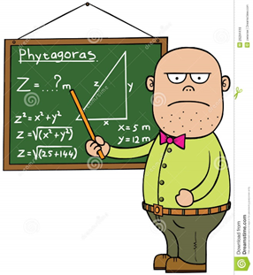

O ensino da geometria é um desafio tanto para o aluno quanto para o professor. Uma grande parte dos alunos chega ao ensino médio com muitas dificuldades, devido a diversos problemas de ensino no Brasil nas séries finais do ensino fundamental.
Tal desafio também perpassa pelo professor, que dificilmente tem a possibilidade (ou tempo) de participar de formações e capacitações na área da matemática computacional e acaba ensinando a geometria como o professor ilustrado na figura acima. São muitos os fatores que tornam o ensino da geometria no ensino média tão defasada.
PAVANELLO (1989, p. 76) afirma que “Com a matemática moderna, as tentativas de ensinar geometria sob o enfoque das transformações e dos planos vetoriais respeitando as orientações do movimento, fizeram com que, a partir da década de 1960, o ensino da geometria fosse relegado a um segundo plano. Dessa forma, como muitos professores não dominavam esses assuntos, passaram a trabalhar preferencialmente a álgebra, o que pode ser constatado pelo fato de que os livros didáticos passaram a abordar a geometria nos capítulos finais, característica essa que permaneceu até a década de 1990.”
FINAL DO EFEITOA ênfase maior no ensino da álgebra pode ser bem exemplificada no fato de que quase todo aluno chega ao ensino médio sabendo perfeitamente encontrar as raízes de uma equação do 2º grau através de uma fórmula metódica, mas não sabe sequer o valor da soma dos ângulos internos de um triângulo ou então calcular a área de um trapézio.
Fazendo uma breve análise do ensino da geometria em sala de aula, conseguimos perceber que ele se dá de maneira tradicional, não dando importância ao ensino que tem como objetivo o desenvolvimento da aprendizagem significativa, e isso acaba levando desinteresse ao aluno em aprender esse campo matemático em função da sua importância.
Tal desafio também perpassa pelo professor, que dificilmente tem a possibilidade (ou tempo) de participar de formações e capacitações na área da matemática computacional e acaba ensinando a geometria como o professor ilustrado na figura acima. São muitos os fatores que tornam o ensino da geometria no ensino média tão defasada.
Pavanello (1989, p. 11) aponta alguns motivos para a decadência no ensino da geometria nas escolas, ela cita o rigor, a visualização e a “subordinação da geometria à álgebra”, como alguns problemas referentes ao ensino desse campo matemático. A preocupação com o rigor no ensino da geometria foi amplamente difundido no século XIX, num momento em que os matemáticos estavam preocupados em reparar os problemas referentes à falta desse no tratamento ao cálculo diferencial, o qual havia se desenvolvido de forma espetacular no século XVIII com Newton e Leibniz, atrelada as discussões em torno das geometrias não euclidianas. ”
FINAL DO EFEITODesse tempo até meados da década de 1990 o ensino da geometria foi sempre metódico e tradicional até a chegada da tecnologia, onde o ensino da geometria passou por grandes reformulações com a ajuda dos softwares dedicados a esse tópico de ensino.
Não vou me prolongar muito aqui pois o assunto de ensino de geometria já foi bem abordado na aula 2 mas com o que vimos nesse tópico, desde o surgimento do ensino da geometria até hoje muita coisa mudou. A chegada da tecnologia colaborou com o entendimento da geometria e o desprendimento do seu ensino do modelo tradicional.
Responsável:
Centro de Educação a Distância do Ceará - CED